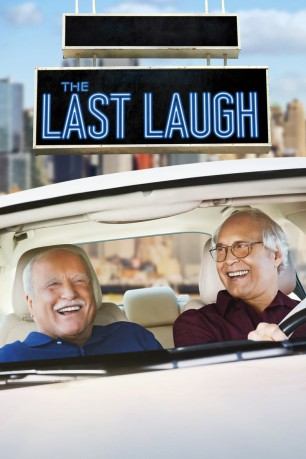

#10502 The Last Laugh
 
 IMDB-Wertung: 5.8 / 10
IMDB-Wertung: 5.8 / 10  Metascore: 31
Metascore: 31 
Talentmanager Al Hart ist zwar im Ruhestand, sieht sich aber an seinen leidenschaftlich ausgeübten Job zurückerinnert, als er seinen ersten Klienten, den Comedian Buddy Green, zufällig in einer Seniorenwohnanlage wiedersieht. Dieser hatte vor 50 Jahren das Showbusiness aufgegeben und wurde Podologe, ist mittlerweile aber pensioniert. Al findet, dass Buddy seinen Lebensabend nicht im Altenheim verschwenden sollte. Er möchte, dass das Comedy-Talent wieder auf die Bühne zurückkehrt, seine alte Leidenschaft neu entdeckt und wieder Witze erzählt. Motiviert, an vergangene Zeiten anzuknüpfen, überredet Al seinen ehemaligen Weggefährten zum Comeback. Gemeinsam flüchten die beiden aus der Wohnanlage und gehen landesweit auf Tournee
WEBHDRIP
Jahr: 2019
Dauer: 98 Minuten
FSK: 12
Land: USA Studio: NetflixTonspuren: - , - , - , - , - ,
Untertitel: Deutsch, Englisch,
Auflösung: 1080p (1920x1080) Größe: 4485 MB
Genre: Komödie
Regisseur: Greg Pritikin
Drehbuch: Greg Pritikin
Soundtrack: Jay Weigel
Darsteller:
 Chevy Chase als Al Hart
Chevy Chase als Al Hart Richard Dreyfuss als Buddy Green
Richard Dreyfuss als Buddy Green Andie MacDowell als Doris Montgomery
Andie MacDowell als Doris Montgomery- George Wallace als Johnny Sunshine
 Randy Austin als Border Agent
Randy Austin als Border Agent Charles Barber als Texas Sheriff Deputy
Charles Barber als Texas Sheriff Deputy Lewis Black als Max Becker
Lewis Black als Max Becker- Rusty Bourg als Coffee Shop Patron
- Amy Brassette als Stand-up Comic / Show Host
 Jeff Caperton als Angry Cowboy
Jeff Caperton als Angry Cowboy- Isla Cervelli als Courtesan
- Rebecca Chulew als Comedy Club Patron
- Giovannie Cruz als Buddy's Prostitute
- Karen Dalferes als Interested Condo Buyer / Comedy Concert Goer
- Chris Fleming als Palace Comic
- James Galea als Magician
- Bob Hartnack als Audience Member
- Kenneth Herrington als Juggler
- Matthew McClain als Biker
 Kate Micucci als Jeannie
Kate Micucci als Jeannie- Aaron Mitchell als Truck Stop Patron
 Ritchie Montgomery als Texas MC
Ritchie Montgomery als Texas MC Mike R. Moreau als Texas Sheriff Deputy
Mike R. Moreau als Texas Sheriff Deputy- Jeffery Bryant Moss als Audience
- Christin Rankins als Waitress
- Felicia M. Reyes als Comedy Club Patron
 Carol Sutton als Woman #2
Carol Sutton als Woman #2 Deneen Tyler als Somebody
Deneen Tyler als Somebody- Ronald Joe Vasquez als Mourner
- Kit Willesee als Actress in Cafe
- Jay Conlin als Night Club Patron (uncredited)
 Julia Holt als Waitress / Comedy Club Patron (uncredited)
Julia Holt als Waitress / Comedy Club Patron (uncredited)- Khiry Armstead als Perchenga Valet
- Tony Beard als Stage Producer
- Belinda D'Pree als Mary Anne
- Karla Garcia als Tijuana Prostitute
- Steve Kish als Club Patron
- Amanda Macon als Truck Stop Patron
 Jay Oliver als Comedy club patron
Jay Oliver als Comedy club patron- Edward Parker als Zanies Audience
 Ron M Patterson als Mover
Ron M Patterson als Mover- Natalie Pellegrino als
- Eliot Preschutti als Stage Hand / Camera Operator
- Rey Reynaud als Interested Condo Buyer / Comedy Concert Goer
- Rafael Villegas als Interpreter
- Jessie Payo als Street Busker (uncredited)
- Toney Chapman Steele als Bar Patron (uncredited)
Datei: X:\2019(G-M)\Last Laugh, The (2019, FSK12, 1920x1080).mkv seit 16.01.2019
Festplatte: HD 2018(G-Z)-2019(A-Z)
 Es gibt insgesamt 47 Filme in der Gruppe '2019(G-M)'
Es gibt insgesamt 47 Filme in der Gruppe '2019(G-M)'